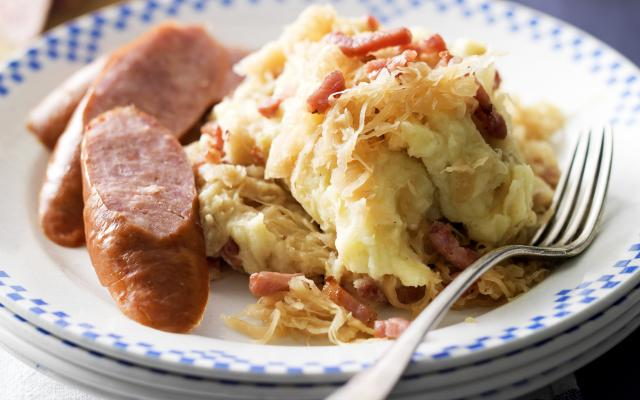

Zuurkool

Description
Zuurkool is a lovely simple Dutch recipe. It is easy and quick to make, and gives a lovely wintery, hearthy taste. For a vegetarian version, simply omit the sausage
With the 2 main ingredients being potatoes and white cabbage. This dish will be both healthy and give you a ton of energy for the day!
Ingredients
- Potatoes (1kg)
- Zuurkool (500g)
- Butter (75g)
- Smoked bacon (200g)
- Milk (100ml)
Steps
- Boil potatoes
- Boil the zuurkool, add some water to avoid burning
- melt half of the butter and fry the bacon bits
- Drain potatoes, add milk and mash into a fine puree
- Drain zuurkool and add the bacon bits and mix with puree
- Heat the mixture for another couple of minutes. Add salt and pepper to taste